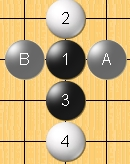
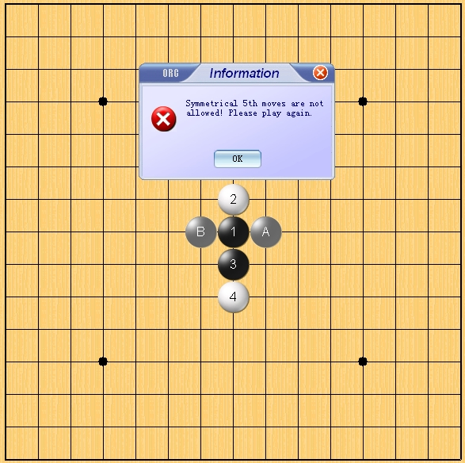
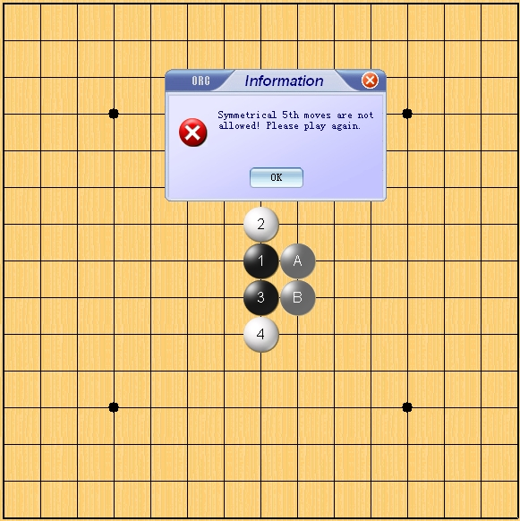
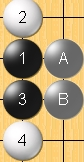
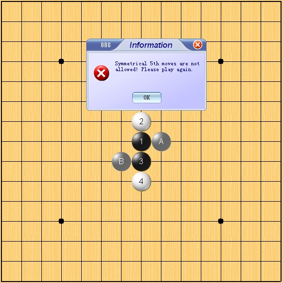

[学术讨论] 非对称问题
#1 [学术讨论] 非对称问题 作者：nara 发表时间：2009-1-21 10:55:05
“RIF规则下，5手2打要非对称”那么怎样的两打是对称的呢？对称又是根据什么来看的呢？对称的方式又有哪些呢？
首先来看两张常见的图，这是松月开局，白4最强防(天地止)，5手这两打是最常见的对称两打，不仅关于这个棋型是对称的，就整个棋盘而言也是对称的，且是轴对称图形，对称轴都为1-2这条纵向直线，两打点Ａ，Ｂ关于这条对称轴对称。


再来看另外两个打点，这两打也是对称的，不过是关于这个棋型是对称的，是轴对称图形，对称轴是1-3中点的横向直线，但就整个棋盘而言是非对称的。所以我们所说的两打非对称应该就是相对于棋型而言的，两打点Ａ，Ｂ关于这条对称轴对称。


下面来看这两个打点，这两打也是对称的，棋型成中心对称图形，对称中心是1-3的中点，两打点Ａ，Ｂ关于这个中心对称。

那么两打非对称是不是相对于棋型而言，两打点Ａ，Ｂ既不能轴对称，也不能中心对称？
以上只是个人一点想法，欢迎大家讨论交流，错误之处还请指正与补充．
［ 茗弈小刀 于 2009-1-21 12:46:04 时奖励此帖[金币加 20 威望加1］
［此帖子已被 茗弈小刀 在 2009-4-22 19:56:12 编辑过］
#2 Re:非对称问题 作者：堂堂 发表时间：2009-1-21 11:17:43
五手两打的对称是指棋型的对称，和棋盘的大小无关，因为有了现在的研究，可能结果不一样，但就这5个子的棋型是一样的，你也可以假设棋盘是无穷大再来想想看
［ 失落刀 于 2009-1-30 16:58:37 时奖励此帖[金币加 20 威望加1］
#3 Re:非对称问题 作者：江南新绿 发表时间：2009-1-21 13:06:54
我以前也有过这个困惑，后来也就习惯了。不过是一种规定而已。五子棋的规定的五手两打和棋盘无关，和棋型有关。
［ 失落刀 于 2009-1-30 16:59:03 时奖励此帖[金币加 20 威望加1］
#4 Re:非对称问题 作者：失落刀 发表时间：2009-1-30 17:00:28
以前也有此困惑，记得特意问过温柔和手术。